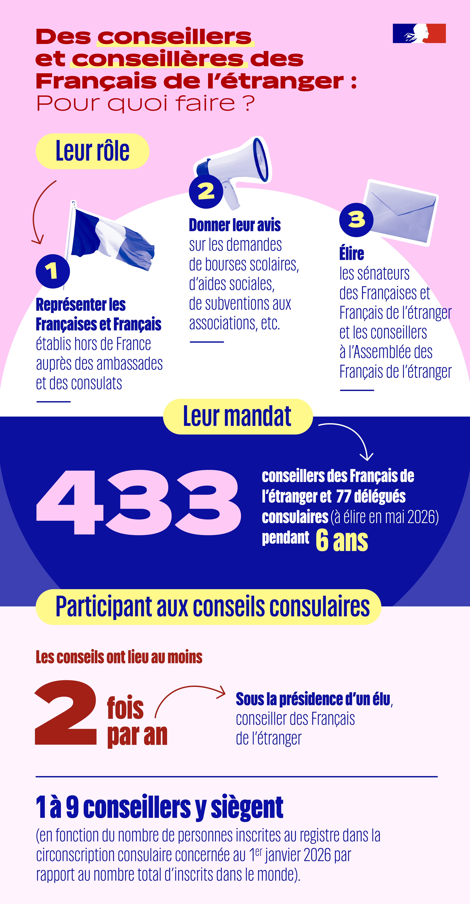

443
conseillers élus
130
circonscriptions
6 ans
de mandat
90
membres de l'AFE

Les conseillers des Français de l'étranger sont des élus de proximité, créés par la loi du 22 juillet 2013. Élus au suffrage universel direct sur listes paritaires, pour un mandat de 6 ans, par les Français inscrits sur les listes électorales consulaires, ils sont actuellement 443 répartis dans 130 circonscriptions à travers le monde (433 lors du prochain scrutin de mai 2026).
Qui sont-ils ?
- Des citoyens français résidant à l'étranger, élus par leurs compatriotes Français de l'étranger
- Chaque circonscription consulaire compte de 1 à 9 conseillers, en fonction du nombre de Français inscrits
- Ils exercent leur mandat de manière largement bénévole, avec une indemnité forfaitaire modeste destinée à couvrir leurs frais de déplacement
Que font-ils au quotidien ?
- Ils représentent et accompagnent les Français de leur circonscription dans leurs démarches auprès de l'ambassade ou du consulat
- Ils siègent au conseil consulaire, l'instance locale qui se réunit au moins 2 fois par an pour traiter des sujets concrets : bourses scolaires, aide sociale, emploi et formation professionnelle, sécurité, soutien aux associations (STAFE)
- Ils émettent des avis consultatifs et formulent des recommandations sur toutes les questions touchant à la vie des Français de leur circonscription
- Ils font remonter les besoins et préoccupations du terrain vers l'administration, le gouvernement et les parlementaires
- Ils contribuent à la vie citoyenne et associative locale et soutiennent des initiatives concrètes
Quel rôle dans la représentation nationale ?
- Ils sont grands électeurs et participent à l'élection des 12 sénateurs des Français de l'étranger
- Parmi les 443 conseillers, 90 sont élus par leurs pairs pour siéger à l'Assemblée des Français de l'étranger (AFE), l'assemblée consultative nationale qui dialogue directement avec le gouvernement sur toutes les politiques publiques concernant les Français de l'étranger
- Ils travaillent en lien avec les 11 députés des Français de l'étranger
En résumé, ce sont l'équivalent des conseillers municipaux, mais pour les communautés françaises à l'étranger - vos interlocuteurs directs au niveau consulaire.